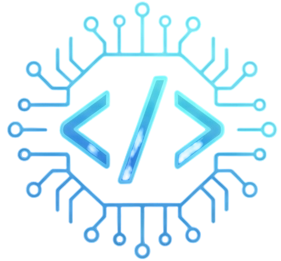
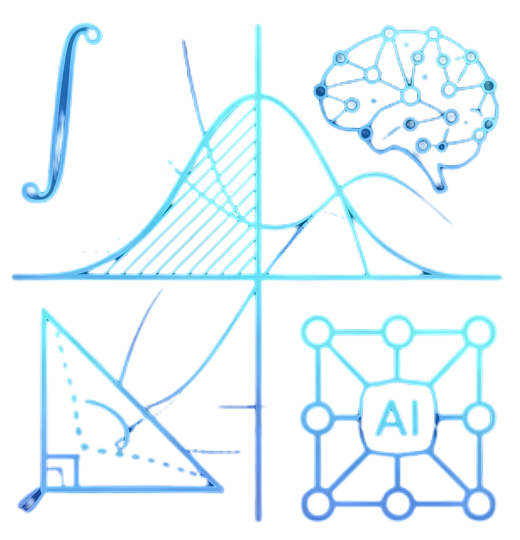
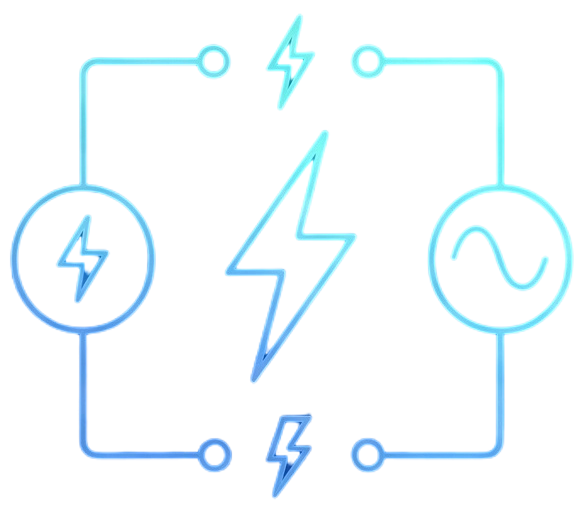
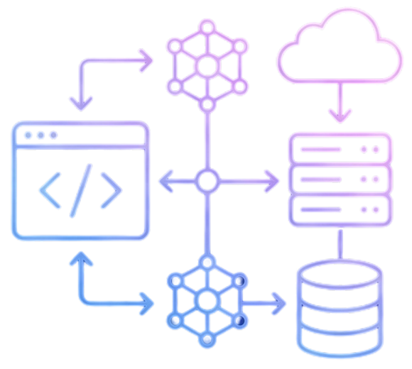

Programación y Paradigmas
Domina los fundamentos en C++ o Java y migra con propósito hacia la flexibilidad de Python para proyectos avanzados.
Ingresar al curso →Cursos autodidactas diseñados para conectar la teoría formal del aula con el desarrollo profesional real.

Domina los fundamentos en C++ o Java y migra con propósito hacia la flexibilidad de Python para proyectos avanzados.
Ingresar al curso →
Entiende cómo el cálculo conceptual, las curvas paramétricas y las integrales dan vida a las animaciones y modelos de IA.
Ingresar al curso →
Del análisis de mallas y teoremas eléctricos hacia la comprensión profunda de la arquitectura de computadores y hardware.
Ingresar al curso →
Construye aplicaciones conectando la experiencia de usuario con arquitecturas de servidor robustas y entornos en la nube.
Ingresar al curso →